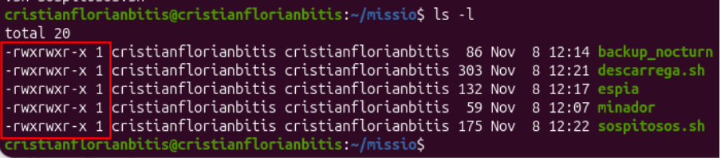
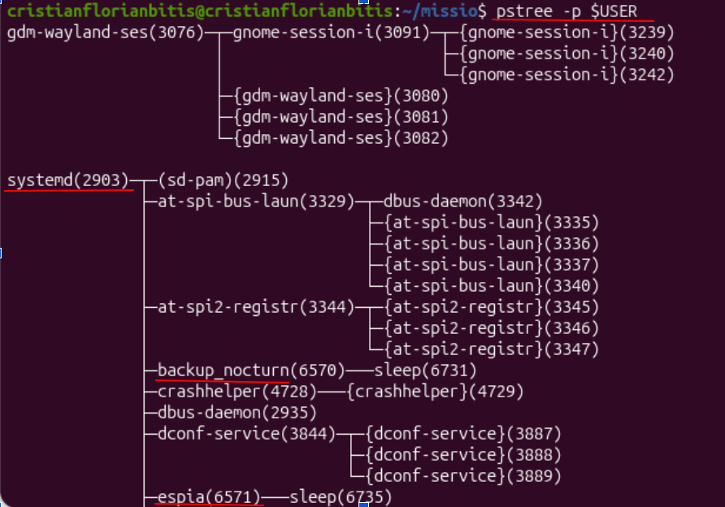
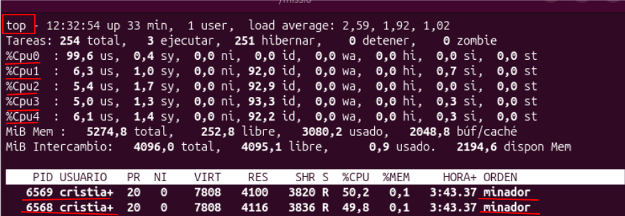
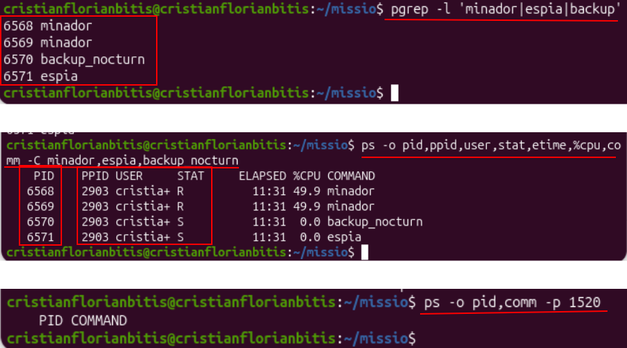
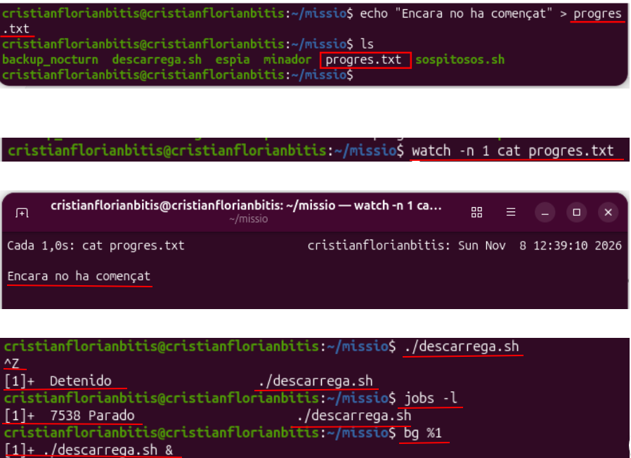
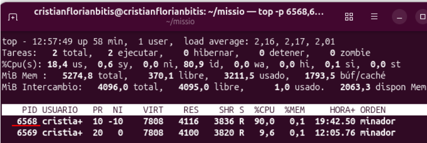
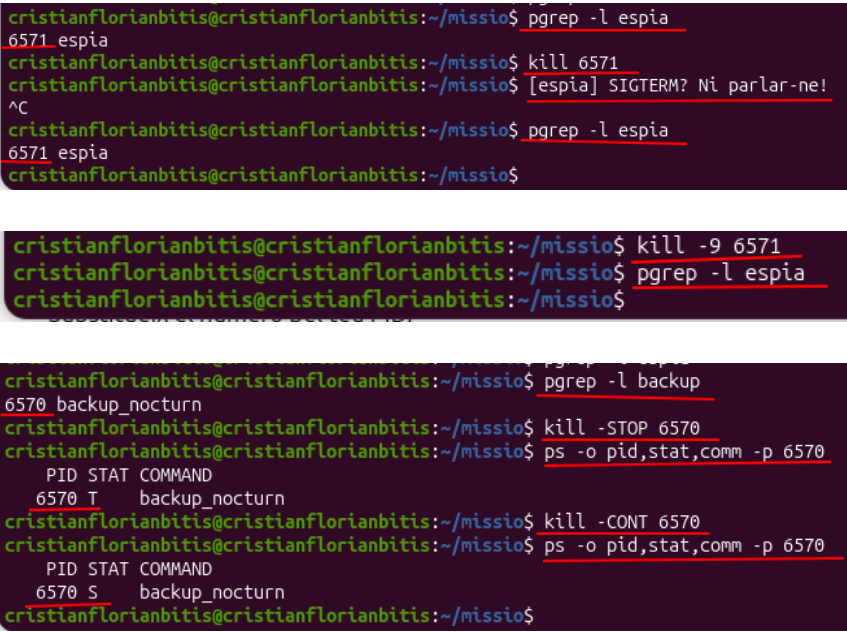
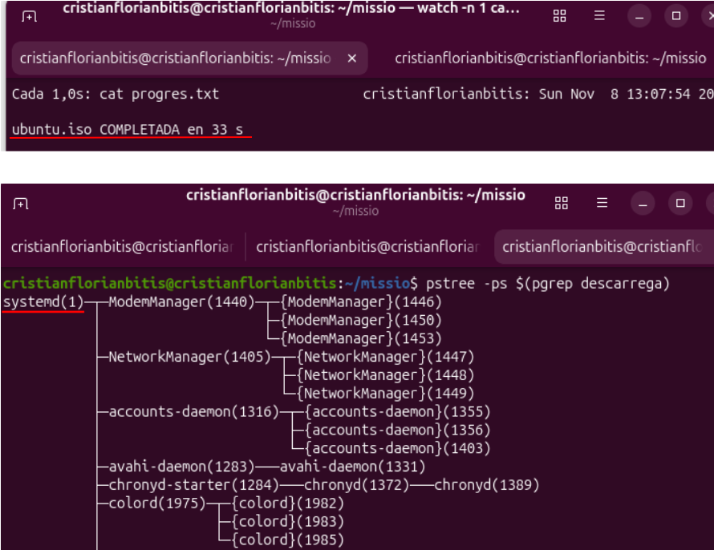

2. Gestió de processos
2.1. Què és un procés?
Un procés és un programa que s'està executant en l'ordinador. Per exemple, quan obrim un navegador o una terminal, s'inicien diferents processos.
Cada procés té un número que s'anomena PID. Aquest número serveix per identificar-lo i poder controlar-lo.
- PID: número que identifica un procés.
- PPID: número del procés pare, és a dir, el procés que ha iniciat un altre procés.
- CPU: part de l'ordinador que executa les instruccions dels programes.
- Prioritat: indica quina importància té un procés per utilitzar la CPU.
2.2. Creació dels fitxers de la pràctica
Primer vam crear una carpeta anomenada missio per guardar tots els fitxers de la pràctica.
Després vam crear cinc scripts: minador, backup_nocturn, espia, descarrega.sh i sospitosos.sh. Aquests fitxers serveixen per simular diferents processos en funcionament.
També vam donar permisos d'execució amb l'ordre chmod +x. Això permet executar els scripts com si foren programes.
Captura 1. Fitxers creats i permisos d'execució.

2.3. Consultar els processos del sistema
Una vegada creats els scripts, vam iniciar els processos amb l'ordre ./sospitosos.sh.
Per veure els processos que estaven funcionant vam utilitzar diferents ordres:
- ps: mostra els processos que s'estan executant.
- pgrep: busca processos pel seu nom.
- ps aux: mostra més informació dels processos, com el PID, l'usuari i l'ús de CPU.
- pstree: mostra els processos en forma d'arbre i permet veure quins processos depenen d'altres.
En la captura podem veure els processos minador, espia i backup_nocturn, juntament amb les seues dades.

2.4. Comprovar l'ús de la CPU
També vam utilitzar l'ordre top per veure quins processos utilitzaven més recursos de l'ordinador.
Amb la tecla P podem ordenar els processos segons l'ús de CPU. Amb la tecla M podem ordenar-los segons la memòria que utilitzen.
En la captura es veu que els dos processos minador utilitzen molta CPU. Per això el servidor pot anar més lent.

2.5. Arbre de processos
Un arbre de processos és una manera de veure com estan relacionats els processos. Un procés pare pot iniciar altres processos que s'anomenen fills.
Amb l'ordre pstree -p $USER vam veure l'estructura dels processos de l'usuari. També vam comprovar que alguns processos apareixien penjats de systemd.

2.6. Executar un procés en segon pla
Un procés es pot executar en primer pla o en segon pla:
- Primer pla: el procés ocupa la terminal mentre s'està executant.
- Segon pla: el procés continua funcionant sense ocupar la terminal i podem continuar utilitzant-la.
Per comprovar-ho vam iniciar la descàrrega amb ./descarrega.sh. Amb Ctrl + Z vam posar el procés en pausa.
Després vam utilitzar jobs -l per veure els treballs de la terminal i bg %1 per continuar la descàrrega en segon pla.

També vam utilitzar fg %1 per tornar a posar la descàrrega en primer pla. Després, amb bg %1, la vam tornar a enviar al segon pla.

2.7. Canviar la prioritat d'un procés
La prioritat serveix per indicar quins processos tenen més preferència per utilitzar la CPU. En Linux es pot modificar amb l'ordre renice.
Vam provar de canviar la prioritat de la descàrrega sense permisos d'administrador, però no ens va deixar fer-ho. Per això vam repetir l'ordre amb sudo.
En la captura es veu que un dels processos minador té una prioritat NI de -10. Això vol dir que té més preferència per utilitzar la CPU.

2.8. Aturar i continuar processos
Linux permet enviar senyals als processos per controlar-los. Vam utilitzar l'ordre kill per fer aquestes proves.
- kill PID: demana al procés que es tanque.
- kill -9 PID: força el tancament del procés.
- kill -STOP PID: posa el procés en pausa.
- kill -CONT PID: fa que el procés continue.
Primer vam intentar tancar el procés espia amb kill, però no es va tancar perquè estava preparat per ignorar aquest senyal. Després vam utilitzar kill -9 i va desaparèixer.
També vam posar el procés backup_nocturn en pausa amb STOP i el vam reprendre amb CONT. Amb l'ordre ps vam comprovar els seus estats: T quan estava parat i S quan estava esperant.

2.9. Continuar una descàrrega en tancar la terminal
Finalment vam comprovar què passava quan tancàvem la terminal mentre una descàrrega estava funcionant.
Primer vam iniciar la descàrrega en segon pla, però en tancar la terminal es va interrompre. Després vam utilitzar nohup, que permet que un procés continue funcionant encara que tanquem la terminal.
Vam comprovar el resultat amb el fitxer de progrés i vam veure que la descàrrega havia acabat correctament.
També vam utilitzar pstree per consultar l'estructura dels processos del sistema.

2.10. Conclusió
En aquesta pràctica hem après a veure els processos que funcionen en Ubuntu, consultar la informació de cada un i controlar-los.
També hem après a posar processos en segon pla, canviar la seua prioritat, aturar-los i fer que continuen. Finalment, hem comprovat com podem deixar una descàrrega funcionant encara que tanquem la terminal.